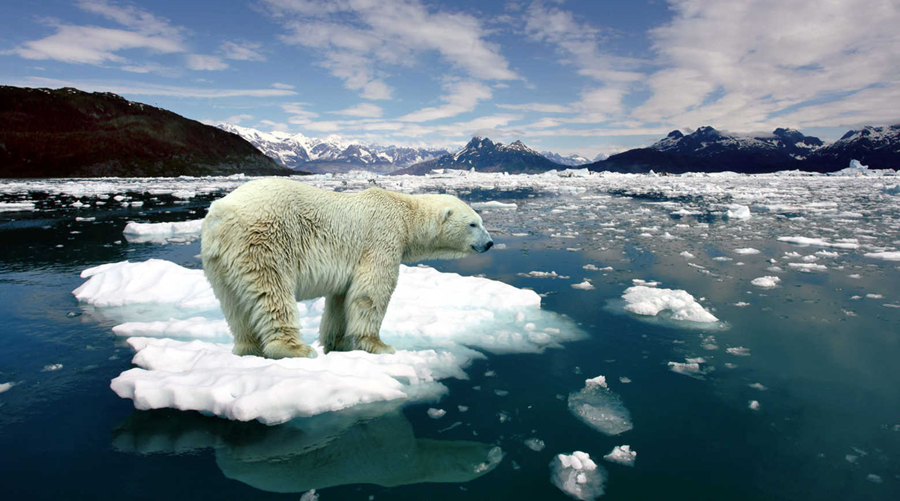
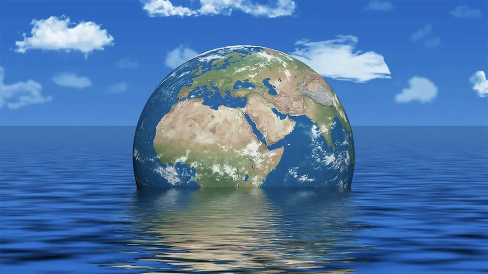

O Efeito da Climatização nos Oceanos
Desde que começaram as medições sistemáticas por satélite em 1993, a taxa de elevação do nível do mar apresentou uma aceleração alarmante. Dados recentes revelam que, em apenas três décadas, os oceanos globais subiram em média 10 centímetros um aumento que não se distribui uniformemente pelo planeta, com algumas regiões experimentando impactos significativamente maiores do que outras.
Esse fenômeno está intrinsecamente ligado às mudanças climáticas. Cerca de 40% do aumento deve-se ao derretimento acelerado de massas glaciais continentais, particularmente na Groenlândia e na Antártida Ocidental. Os outros 60% resultam da expansão térmica das águas oceânicas, que se aquecem em ritmo sem precedentes. O ano de 2024 marcou um triste recorde, tornando-se o mais quente da história desde o início dos registros confiáveis, situação agravada por padrões climáticos como o El Niño, que persistiu até meados do ano antes de dar lugar a um La Niña excepcionalmente breve e fraco.
A dinâmica oceânica revela padrões preocupantes. Enquanto o Pacífico equatorial apresentou oscilações entre fases quentes e frias, as temperaturas médias dos oceanos continuaram sua trajetória ascendente. Esse aquecimento persistente não apenas encurtou a duração do fenômeno La Niña em 2024, como também contribuiu para a redução acelerada das calotas polares. A perda de gelo no Ártico e em regiões como o norte do Canadá e da Rússia alimenta um ciclo vicioso: quanto mais gelo derrete, mais a superfície escura do oceano absorve radiação solar, acelerando ainda mais o aquecimento.
A curva de elevação marinha segue uma progressão geométrica preocupante. Os primeiros 5 centímetros de aumento levaram aproximadamente duas décadas para se materializar, enquanto os 5 centímetros subsequentes apareceram em apenas uma década. Projeções baseadas nos atuais padrões de derretimento e expansão térmica sugerem que os próximos 6 centímetros poderão ser alcançados em apenas 15 anos. Essa aceleração coloca em risco especialmente as regiões costeiras de baixa altitude em todo o mundo.
No contexto brasileiro, os efeitos já são visíveis e mensuráveis. O litoral nordestino enfrenta processos intensos de erosão costeira, enquanto cidades como Rio de Janeiro e Santos registram crescentes dificuldades com o escoamento de águas pluviais durante marés altas. Esses desafios tendem a se intensificar à medida que o nível do mar continua sua ascensão inexorável, pressionando infraestruturas urbanas e ecossistemas costeiros já fragilizados.
A situação atual representa um desafio complexo para a comunidade científica e para os formuladores de políticas públicas. Com os oceanos respondendo de forma cada vez mais intensa às mudanças climáticas, o comportamento futuro do nível do mar permanece como uma das maiores incógnitas nos modelos climáticos atuais, exigindo monitoramento constante e aprimoramento das técnicas de previsão.
Degelo Acelerado e Seu Impacto no Sistema Climático Global
O aumento contínuo das temperaturas médias do planeta, resultado direto da intensificação do efeito estufa, está desencadeando transformações profundas nos sistemas criosféricos terrestres. Entre os fenômenos mais preocupantes está o acelerado processo de degelo, que atinge de forma particularmente intensa as regiões polares, servindo tanto como consequência quanto como catalisador do aquecimento global.
Nas últimas décadas, o Ártico emergiu como uma das regiões mais sensíveis às mudanças climáticas. Dados científicos revelam uma redução de 14% na extensão de gelo marinho, acompanhada por um afinamento de 40% na espessura da camada gelada. Paralelamente, a Antártida registrou perdas alarmantes de aproximadamente 3.000 km² de sua massa glacial, correlacionadas com um aumento de 2,5°C nas temperaturas regionais desde meados do século XX. Esse derretimento acelerado não apenas modifica ecossistemas polares, mas também contribui para a elevação global do nível dos oceanos, ameaçando comunidades costeiras em todo o mundo.
A Groenlândia representa outro ponto crítico nesse cenário. Estudos publicados na revista Science demonstram que a taxa de degelo nesta região triplicou nas últimas duas décadas, com aceleração particularmente acentuada a partir de 2004. Esse processo libera volumes impressionantes de água doce nos oceanos estimativas recentes indicam que apenas a Groenlândia contribui com cerca de 1 milímetro anual para a elevação global do nível do mar, quantidade que continua a aumentar progressivamente.

Fonte Disponível em: Boa vontade

Fonte Disponível em: Aguas do Algarve
Além dos impactos diretos no nível dos oceanos, o degelo polar desencadeia um perigoso ciclo de retroalimentação climática. À medida que as superfícies brancas e altamente reflexivas de gelo dão lugar a águas oceânicas mais escuras, ocorre uma redução significativa do albedo terrestre a capacidade de refletir a radiação solar de volta ao espaço. Esse fenômeno resulta em maior absorção de calor pelos oceanos, amplificando ainda mais o aquecimento global e, consequentemente, acelerando novos processos de degelo.
Um aspecto particularmente preocupante é a liberação de gases armazenados no permafrost e nas camadas glaciais. O derretimento expõe matéria orgânica anteriormente congelada, que ao decompor-se libera metano e dióxido de carbono potentes gases de efeito estufa que intensificam ainda mais o aquecimento global. Esse mecanismo cria um ciclo vicioso onde o próprio degelo gera condições para sua aceleração, em um processo que pode se tornar cada vez mais difícil de conter à medida que avança.
As implicações dessas transformações vão muito além das regiões polares. Alterações nos padrões de circulação oceânica, modificações nos regimes de precipitação e aumento na frequência de eventos climáticos extremos estão diretamente associados às mudanças ocorrendo nas áreas glaciais. O degelo acelerado representa, portanto, não apenas uma ameaça localizada, mas um fator de desestabilização do sistema climático global, com consequências que se estendem por todo o planeta.
Reconfiguração dos Ecossistemas Marinhos pelas Mudanças Climáticas
Os oceanos estão testemunhando uma transformação sem precedentes em seus padrões migratórios. Espécies marinhas de todos os tamanhos, desde o plâncton microscópico até os maiores mamíferos aquáticos, estão sendo forçadas a se deslocar em busca de condições térmicas adequadas. Estudos recentes indicam que a velocidade média dessas migrações chega a 72 km por década, ritmo que supera em muito as mudanças observadas em ecossistemas terrestres.
No Ártico, as transformações são particularmente dramáticas. A redução de 40% na extensão do gelo marinho nos últimos 40 anos criou novas rotas de navegação, mas também alterou radicalmente os ecossistemas locais. Baleias-da-Groenlândia agora permanecem até seis semanas a mais em suas áreas tradicionais de alimentação, enquanto espécies de peixes comerciais como o bacalhau do Pacífico já se deslocaram 300 km para norte desde os anos 1980.
As correntes oceânicas, que por milênios guiaram os ciclos migratórios marinhos, estão se tornando menos previsíveis. No Atlântico Norte, a desaceleração da Circulação Termohalina está afetando desde o plâncton até os grandes predadores. No Pacífico, o aquecimento das águas superficiais está empurrando cardumes de atum e outras espécies pelágicas para profundidades maiores ou latitudes mais altas.

Fonte Disponível em: Mar sem Fim

Fonte Disponível em: Br freepik
Esse rearranjo geográfico da vida marinha está criando desequilíbrios ecológicos preocupantes. Em algumas regiões, predadores estão chegando a áreas de desova antes que suas presas tradicionais estejam disponíveis. Em outras, espécies tropicais invasoras estão competindo com organismos nativos por recursos, como ocorre com a expansão do peixe-leão no Caribe e no Atlântico ocidental.
Os impactos socioeconômicos já são mensuráveis. Comunidades pesqueiras tradicionais veem seus estoques habituais desaparecerem, enquanto novas espécies surgem em suas águas territoriais. A indústria da pesca global precisa se adaptar rapidamente a essas mudanças, com custos estimados em bilhões de dólares anuais para redesenhar rotas e técnicas de captura.
Na base dessa cadeia de transformações, o plâncton marinho responsável por 50% do oxigênio planetário e fundamento da teia alimentar oceânica está sofrendo alterações em sua distribuição e composição. Essas mudanças microscópicas, embora menos visíveis, podem ter os impactos mais profundos e duradouros na saúde dos oceanos e no clima global como um todo.
Videos Relacionados a Leitura
Aquecimento Global nos Oceanos
Impactos do aquecimento global nos oceanos (alerta)
El niño La niña
Conceitos, causas e consequências.